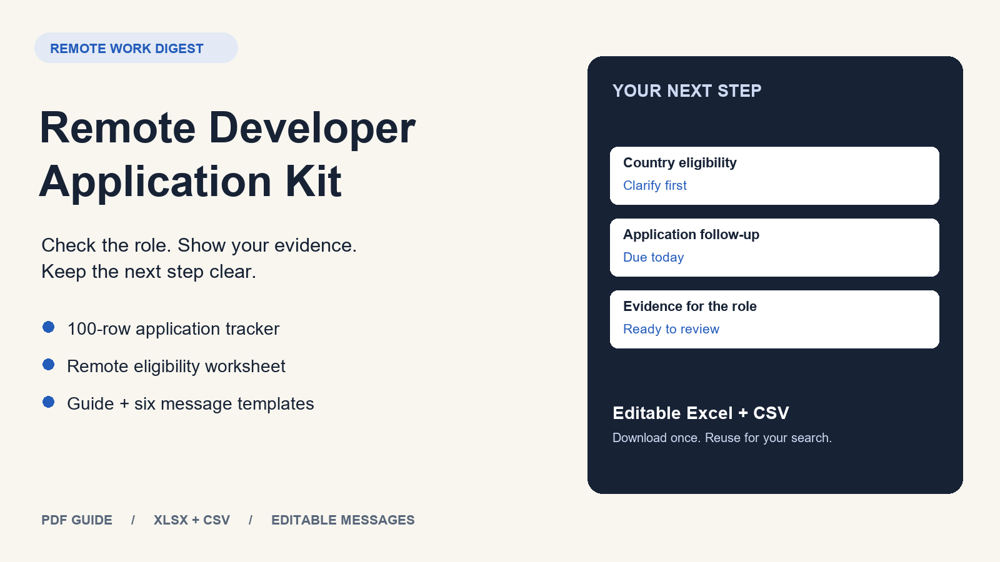

DIGITAL TOOLKIT
Remote Developer Application Kit
Excel tracker, remote eligibility worksheet, five-page guide and six editable messages. One download for your next job search.
- Check country, working hours, contract and core requirements before spending time on an application.
- Keep 100 applications and their next actions in one workbook, with status dropdowns and calculated due dates.
- Turn your real experience into specific evidence using a worked example and editable worksheets.
One-time digital download. Purchase and file delivery via Gumroad.